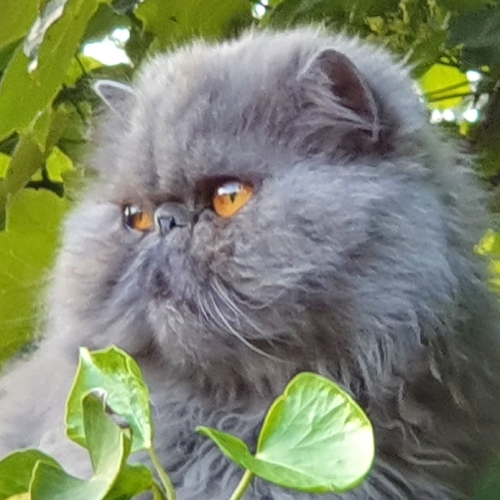

arrow_back_ios
arrow_forward_ios


Bonjour, je suis Lily, une chatte persan bleue âgée de bientôt 8 ans. Je vis avec mon cher maître David, qui est le centre de mon monde. J'adore passer mes journées à me prélasser au soleil, me toiletter et faire de longues siestes sur le canapé. Je suis une chatte calme, douce et gentille, et j'aime passer du temps avec mon maître.
J'ai une petite faiblesse pour le fromage - toutes sortes de fromage, en fait. J'adore en grignoter un morceau de temps en temps, même si mon maître essaie de me faire manger une alimentation plus saine. Je dois avouer que je suis une petite gourmande, mais je sais que mon maître me soigne bien, donc je me sens en sécurité.
Malheureusement, je suis assez fragile et je tombe souvent malade. Mais heureusement, mon maître prend soin de moi et me conduit chez le vétérinaire dès que quelque chose ne va pas. Je suis toujours reconnaissante pour ses soins aimants.
Le soir, au moment du coucher, j'adore venir me blottir contre mon maître pour recevoir des câlins. Je me sens en sécurité dans ses bras et je sais que je suis aimée. Je dors toujours à côté de lui, heureuse et apaisée par sa présence.
Je suis une chatte heureuse et chanceuse d'avoir un maître aussi aimant et attentionné. Je suis reconnaissante pour chaque moment passé avec lui et je sais que je suis la chatte la plus chanceuse du monde.
 arrow_circle_down